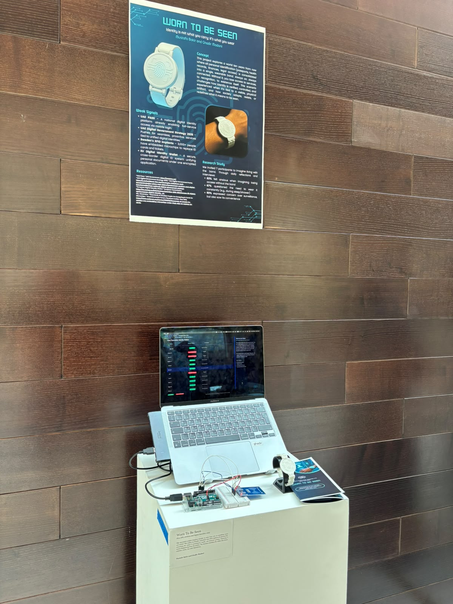
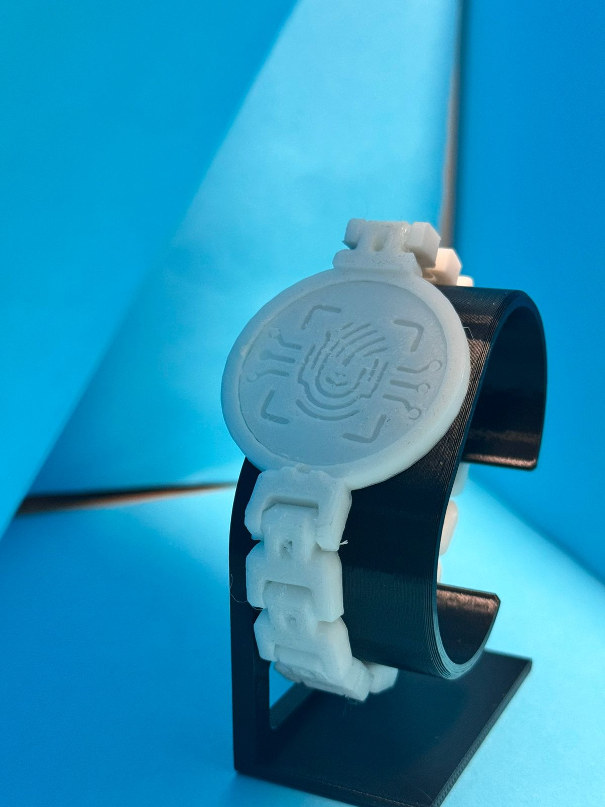
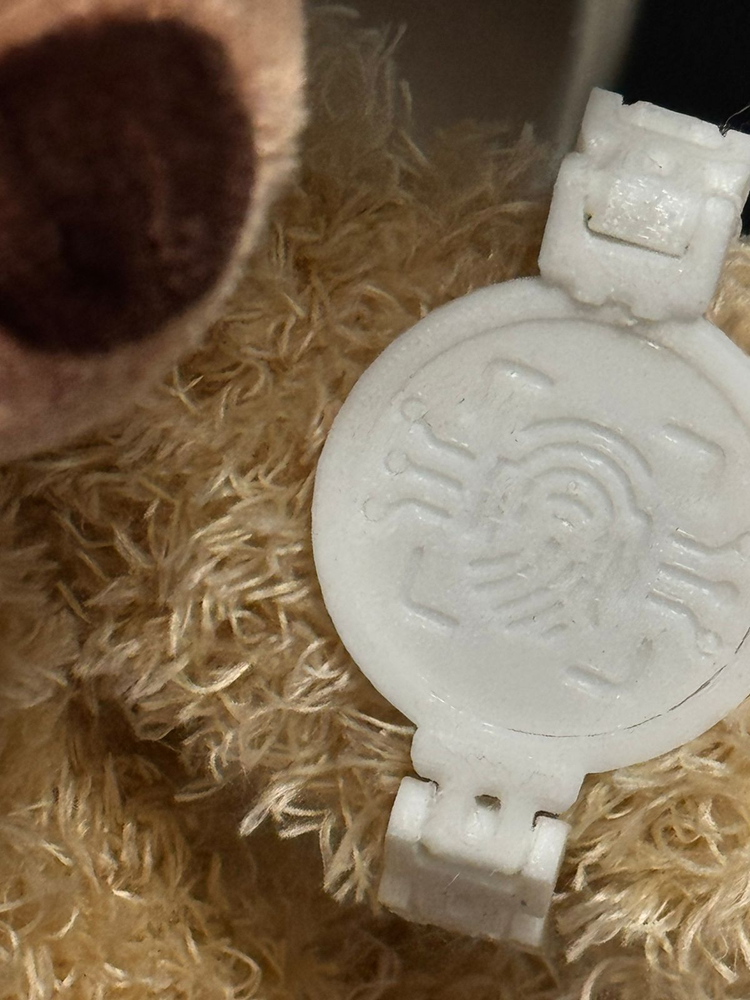
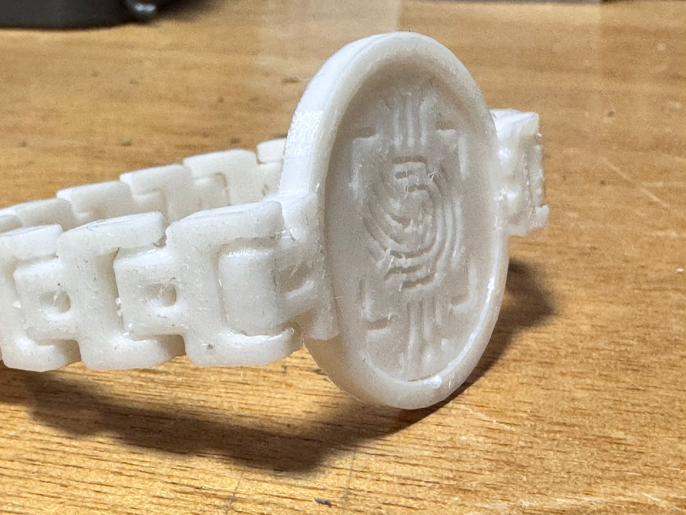
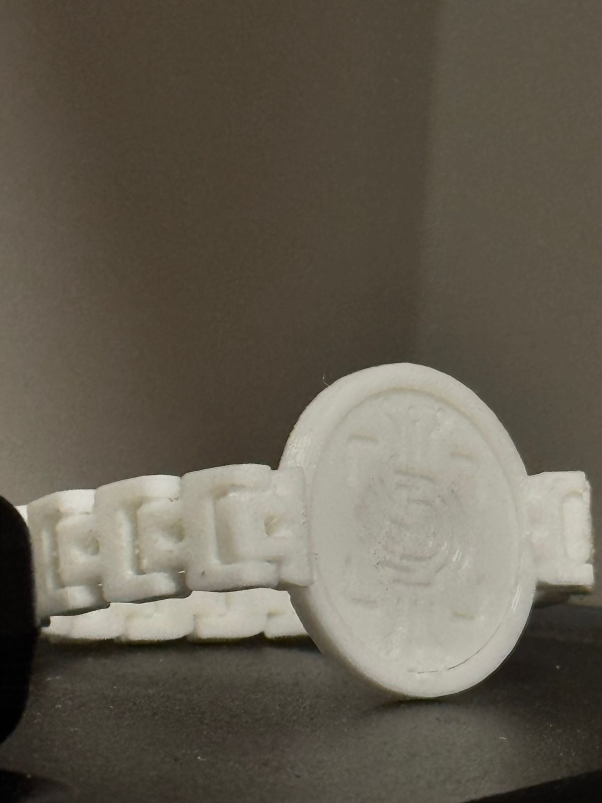

Concept
Worn To Be Seen imagines a world ten years from now where all personal identification — passports, health records, finances, legal access — is consolidated into a single connected wearable band. Always on, always tied to recognition. Without it, you lose access to services, and eventually to existence itself.
The project asks how identity is verified, controlled, and experienced once it's bound to a visible physical artifact — and how a society adapts, resists, or redefines what it means to be seen.
Weak signals
The scenario extrapolates from signals that already exist: UAE Pass and the UAE Digital Government Strategy 2025, Sweden's RFID implants (3,000+ people carrying embedded microchips), and the EU Digital Identity Wallet.
The prototype & study
A working band prototype pairs RFID with an Arduino and a digital interface, including a live "population identity status" dashboard. In a small research study, seven participants imagined living with the band: 83% felt anxious imagining losing access without it, 67% questioned wearing it constantly, and 50% worried about surveillance even as they saw its convenience.
gallery



